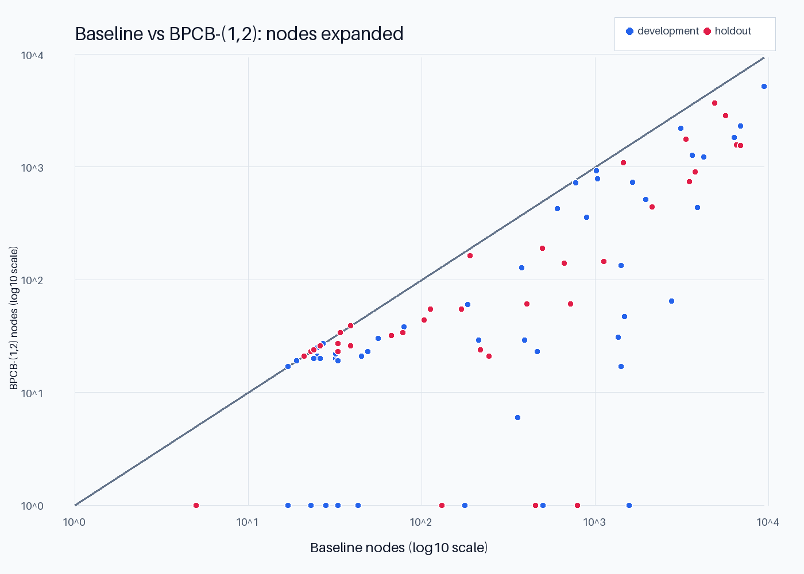
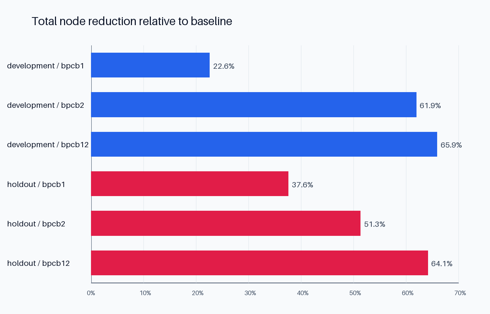

โครงงานนี้ศึกษาปัญหาการหาลำดับถอดสกรูจากแผ่นที่ซ้อนกัน สกรูแต่ละตัวมีสี กล่องรับสกรูมีลำดับตายตัว และสกรูที่ยังเข้ากล่องปัจจุบันไม่ได้ต้องพักใน tray ที่มีความจุจำกัด เป้าหมายคือหาลำดับที่ถอดสกรูได้ครบโดย tray ไม่ล้น หรือพิสูจน์ว่าไม่มีลำดับดังกล่าว ปัญหานี้ถูกกำหนดเป็นโมเดลแบบ discrete ชื่อ Ordered Screw-Removal Puzzle (OSRP)
Baseline ที่ใช้เปรียบเทียบคือ Memoized Depth-First Search ซึ่งไม่ขยาย dead state เดิมซ้ำ แต่ยังมี waste จากการเดินลึกเข้าไปใน branch ที่ blocker structure บังคับให้ tray ล้นแน่นอน โครงงานจึงเสนอ Box-Prefix Blocker-Closure Bound หรือ BPCB ซึ่งเลือกสกรูเป้าหมายที่ต้องใช้ปิดกล่อง คำนวณ recursive blocker closure และนับสกรูสีที่ไม่มีทางออกจาก tray ตลอด box prefix หากจำนวนขั้นต่ำที่ถูกบังคับให้ค้างมากกว่าความจุ จะ prune state นั้นได้โดยไม่เสียคำตอบ วิธีหลักคือ BPCB-(1,2) ซึ่งรวม bound ของหนึ่งและสองกล่อง
การทดลองใช้ frozen benchmark 100 instances แบ่ง development 60 และ final hold-out 40 instances ทุกคำตอบตรวจด้วย exact label และ solution replay บน final hold-out BPCB-(1,2) ลด nodes จาก 44,549 เหลือ 15,972 หรือลด 64.15% และเร็วขึ้นโดยรวม 1.855 เท่า ผลทั้ง 400/400 instance-method combinations ตรงกับ exact label อย่างไรก็ตาม direct-path levels แทบไม่มี subtree ให้ตัดและอาจช้าลงจาก bound overhead รายงานจึงสรุปว่า BPCB ลด search waste ได้จริงใน branch ที่มี forced storage สูง แต่ไม่ใช่วิธีที่เร็วกว่า baseline ทุก instance
เกมประเภท Screw Jam ให้ผู้เล่นถอดสกรูสีต่าง ๆ ออกจากแผ่นที่ซ้อนกัน สกรูบางตัวถอดไม่ได้เพราะยังมีแผ่นชั้นบนบังอยู่ เมื่อสกรูตัวสุดท้ายของแผ่นถูกถอด แผ่นนั้นจึงหลุดและหยุดบังสกรูด้านล่าง ขณะเดียวกันระบบมีกล่องรับสกรูทีละสี ถ้าสีของสกรูตรงกับกล่องปัจจุบัน สกรูจะเข้ากล่องโดยตรง แต่ถ้าสีไม่ตรง สกรูต้องค้างใน waiting tray ซึ่งมีจำนวนช่องจำกัด
ความยากจึงไม่ได้อยู่ที่การเลือกสกรูที่มองเห็นง่ายที่สุดอย่างเดียว ตัวเลือกหนึ่งครั้งมีผลพร้อมกันสามด้าน คือแผ่นใดจะหลุด สีใดจะถูกเปิด และ tray จะเหลือพื้นที่เท่าไรสำหรับกล่องในอนาคต การถอดสกรูที่ legal ตอนนี้อาจนำไปสู่ dead end ภายหลัง ในทางกลับกัน tray ที่เต็มก็ยังไม่จำเป็นต้องแพ้ หากยังมีสกรูสีตรงกล่องซึ่งทำให้กล่องเต็มและ auto-drain สกรูที่รออยู่ได้
รายงานนี้เรียกโมเดลแบบ discrete ว่า Ordered Screw-Removal Puzzle หรือ OSRP Input ประกอบด้วย plates และลำดับชั้น, screws พร้อมสีและ plate ที่สังกัด, blocker relation, ลำดับ boxes พร้อมสีและ capacity และ waiting capacity W โมเดลเก็บเฉพาะสิ่งที่มีผลต่อ legal move และผลลัพธ์ของเกม ส่วน animation, score, booster และรูปร่างหัวสกรูไม่อยู่ในขอบเขต
เพื่อให้ state finite และ deterministic รายงานใช้ static-geometry assumption: แผ่นยังอยู่ตำแหน่งเดิมตราบใดที่เหลือสกรูอย่างน้อยหนึ่งตัว และหยุดบังทันทีเมื่อสกรูตัวสุดท้ายถูกถอด Source runtime จริงอนุญาตให้แผ่นที่เหลือสกรูหนึ่งตัวหมุนได้ ดังนั้น solver นี้ไม่ได้จำลองฟิสิกส์ทุกกรณีของเกมต้นฉบับ ข้อสมมตินี้เป็นข้อจำกัดของผลที่รายงาน ไม่ใช่สิ่งที่ควรซ่อนไว้
ให้ state เขียนย่อเป็น X = (R, i, f, T) โดย R คือชุดสกรูที่ยังอยู่บนกระดาน, i คือ index ของ active box, f คือจำนวนช่องที่เติมแล้ว และ T คือจำนวนสกรูแต่ละสีใน tray การเก็บ tray เป็น color-count multiset ทำให้ตำแหน่งช่องที่สลับกันแต่มีผลเหมือนกันเป็น state เดียวกัน
สกรูเป็น legal move เมื่อยังอยู่ใน R และไม่มี active plate บังอยู่ หลังถอดสกรู ระบบส่งสกรูเข้ากล่องถ้าสีตรง มิฉะนั้นส่งเข้า tray หาก tray เต็ม move นั้นไม่มี successor เมื่อกล่องเต็มจะเปิดกล่องถัดไปและดึงสกรูสีตรงจาก tray อัตโนมัติ กระบวนการนี้ทำซ้ำจนถึง fixed point เพราะ move เดียวอาจทำให้หลายกล่องเต็มต่อเนื่องกัน
Output มีสองแบบ: SOLVED พร้อมลำดับ screw IDs ที่ replay แล้วถึง goal หรือ UNSOLVABLE เมื่อค้นครบและพิสูจน์ว่าไม่มีลำดับใดทำได้ ผลที่ชน node/time limit ต้องรายงานเป็น LIMIT_REACHED ไม่ใช่ UNSOLVABLE
Baseline แรกคือ Depth-First Search ที่ลอง legal move ทุกตัวตามลำดับคงที่ ถ้า successor แก้ได้ให้ต่อ screw นั้นหน้าคำตอบ ถ้าทุก successor แก้ไม่ได้จึงประกาศ state ปัจจุบันเป็น dead วิธีนี้ถูกต้องเพราะสำรวจ legal continuation ครบ แต่ worst case เป็น exponential ในจำนวนสกรู เนื่องจากแต่ละระดับอาจมีตัวเลือกหลายตัว
ลำดับการถอดต่างกันอาจมาถึง logical state เดียวกัน เช่น ถอดสกรูอิสระ A แล้ว B หรือ B แล้ว A หาก state นั้นถูกพิสูจน์ว่า dead แล้ว การค้นซ้ำไม่มีข้อมูลใหม่ Memoized DFS จึงเก็บ canonical dead states และไม่ขยาย state เดิมซ้ำ วิธีนี้ตรงกับ Q1 REMEMBER และเป็น baseline ที่แข็งแรงกว่าการเปรียบเทียบกับ brute force ธรรมดา
อย่างไรก็ตาม memoization ช่วยเมื่อเคยเห็น state เดิมแล้วเท่านั้น ถ้า state ใหม่ไม่เคยพบแต่ blocker structure บังคับให้ tray ล้นแน่นอน DFS ยังต้องเดินต่อจนเกิด overflow จริง Waste ที่โครงงานต้องการลดจึงไม่ใช่ repeated state แต่เป็น late discovery of forced overflow
สมมติกล่องปัจจุบันต้องการสกรูสีน้ำเงินอีกหนึ่งตัว แต่สกรูน้ำเงินทุกตัวถูกแผ่นสีแดงบังอยู่ การจะเข้าถึงเป้าหมายจึงต้องถอดสกรูสีแดงบนแผ่นนั้นออกก่อน หากสีแดงไม่มีอยู่ในกล่องปัจจุบัน สกรูเหล่านั้นต้องค้างใน tray จนกว่ากล่องน้ำเงินจะเต็ม ถ้าจำนวนที่ถูกบังคับให้ค้างมากกว่า W branch นี้ไม่มีทางสำเร็จ แม้ overflow จะยังไม่เกิดใน state ปัจจุบัน
| คำถาม | เกี่ยวข้องหรือไม่ | ผลต่อการออกแบบ |
|---|---|---|
| Q1 REMEMBER | เกี่ยวข้อง | เก็บ canonical dead states เพื่อลด repeated-state waste แต่ถือเป็น baseline ไม่ใช่ contribution ใหม่ |
| Q2 DISCARD | เกี่ยวข้องมากที่สุด | ถ้าพิสูจน์ lower bound ของ forced tray occupancy ได้และค่ามากกว่า W จะตัด branch ได้อย่างปลอดภัย |
| Q3 EXPLOIT | เกี่ยวข้อง | ใช้ blocker relation แบบ recursive และลำดับสีของ box prefix ซึ่ง DFS ปกติใช้เพียงตรวจ move ทีละก้าว |
| Q4 TRADE | เกี่ยวข้อง | แลก memory กับ memoization, cached lookup และ bitset เพื่อให้ closure และ set union เร็วขึ้น |
| Q5 SHRINK | ไม่ใช่แกนหลัก | DFS ลด remaining screws ทีละตัวอยู่แล้ว แต่ tray กับ box sequence เชื่อมทุกส่วน จึงแยกเป็น independent subproblems ได้ยาก |
| Q6 COMMIT | ยังใช้ไม่ได้ | สกรูสีตรงกล่องแต่ละตัวอาจปลดตัวบังคนละชุด และถ้ากล่องเต็มเร็ว สกรูสีเดิมที่ต้องถอดภายหลังก็อาจกลายเป็นสีผิดกล่องได้ จึงยังไม่มี greedy choice ที่พิสูจน์ว่าปลอดภัยและต้องคง exact branching |
จาก Q2 และ Q3 เกิด hypothesis หลัก: ถ้า solver คำนวณจำนวนสกรูขั้นต่ำที่ถูกบังคับให้ค้างใน tray จาก recursive blocker closure ภายใต้ ordered box prefix แล้ว prune เมื่อค่าดังกล่าวมากกว่า W จะลดจำนวน state ที่ exact search ขยาย โดยยังให้ผลตรงกับ baseline
เริ่มจาก target screws ที่ต้องใช้เติมกล่อง หาก plate ใดบัง target อยู่ plate นั้นต้องถูกทำให้ว่าง จึงต้องถอดสกรูที่เหลือบน plate นั้นทุกตัว แต่สกรูเหล่านี้อาจถูก plate อื่นบังต่อ จึงขยายซ้ำเป็น recursive closure ให้ C_X(U) เป็นชุดสกรูที่ถูกบังคับให้ถอดเพื่อเข้าถึง target set U จาก state X
ให้ prefix เริ่มจาก active box ยาว k ใบ สำหรับแต่ละสี c กำหนด demand_k(c) เป็นจำนวนช่องที่ยังต้องเติมเพื่อให้ prefix จบ Active box ใช้เฉพาะช่องที่ยังขาด ส่วนกล่องถัดไปใช้ capacity เต็ม สกรูสีเดียวกันที่อยู่ใน tray ช่วยเติม demand ได้ก่อน จึงต้องเลือก target จากกระดานอย่างน้อย
สกรูใน tray ที่มีมากกว่า demand ของสีนั้นไม่สามารถถูก prefix รับได้ทั้งหมด ส่วนเกินต้องค้างถึงปลาย prefix จึงได้
สำหรับทุกวิธีเลือก target screws จากกระดานให้ครบ board_need_k คำนวณ blocker closure แล้วนับเฉพาะสกรูใน closure ที่สีไม่ปรากฏใน prefix เพราะสกรูเหล่านั้นเข้ากล่องใดใน prefix ไม่ได้ ให้ค่าต่ำสุดเหนือทุก target selection เป็น L_k(X)
Pruning rule คือ
ถ้าจำนวนสกรูสีใดบนกระดานน้อยกว่า board_need_k(c) ก็ prune ได้ทันที เพราะ supply ไม่พอเติม prefix แม้ไม่พิจารณา tray
BPCB-1 พิจารณากล่องปัจจุบัน จึงนับสีของกล่องที่สองเป็น off-color และบางครั้งให้ bound ที่แรงกว่า แต่ BPCB-2 มองเห็น blocker ที่จำเป็นต่อกล่องถัดไปได้ก่อน BPCB-1 ทั้งสองจึงไม่ dominate กัน วิธีหลักตรวจ BPCB-1 ก่อน ถ้ายังตัดไม่ได้จึงตรวจ BPCB-2 และ prune เมื่ออย่างใดอย่างหนึ่งพิสูจน์ overflow
solveBPCB12(level, state):
state = normalize(state)
if goal(state): return SOLVED
if state in deadMemo: return UNSOLVABLE
if BPCB(level, state, k=1) proves overflow:
deadMemo.add(state)
return UNSOLVABLE
if BPCB(level, state, k=2) proves overflow:
deadMemo.add(state)
return UNSOLVABLE
for move in legalMoves(state):
if solveBPCB12(level, apply(move)) is SOLVED:
return move + suffix
deadMemo.add(state)
return UNSOLVABLE
Implementation แปลง screw sets, plate contents และ color sets เป็น integer bitsets การรวม closure ใช้ bitwise OR และนับจำนวนสมาชิกด้วย bit_count() Lookup ที่ไม่เปลี่ยนตาม state ถูก cache ต่อ level สำหรับ BPCB-2 จำนวน target combinations อาจโตเร็ว จึงตั้ง limit 50,000 combinations ถ้าเกิน limit จะไม่เดาค่าแบบ heuristic แต่ fallback เป็น bound ที่อ่อนลง เพื่อรักษาความถูกต้องแม้จะเสียโอกาส prune
สมมติว่ามี solution continuation ที่ทำให้กล่องทั้ง k ใบใน prefix เต็ม เลือก target set จริงที่ solution ใช้เติม demand หลังหักสกรูเริ่มต้นใน tray ชุดนี้เป็นหนึ่งในตัวเลือก U ที่ใช้คำนวณ L_k(X)
ก่อน target ทุกตัวจะถูกถอด plate ที่บังต้องถูกทำให้ว่าง และการทำ plate เหล่านั้นให้ว่างอาจบังคับ plate ชั้นบนต่อไป ดังนั้นสกรูใน C_X(U) ต้องถูกถอดไม่ช้ากว่าจังหวะที่ prefix เสร็จ สกรูใน closure ที่สีไม่ปรากฏใน prefix เข้ากล่องใดในช่วงนี้ไม่ได้ จึงยังค้างใน tray พร้อมกันเมื่อ prefix จบ รวมกับ tray ส่วนเกินเดิมแล้ว occupancy จริงไม่น้อยกว่า
เนื่องจาก L_k(X) เป็น minimum เหนือทุก target selection จึงมี offprefix_cost_k(U_actual) >= L_k(X) หากผลรวม lower bound มากกว่า W จะขัดกับสมมติฐานว่ามี legal continuation ดังนั้น state ที่ BPCB prune ไม่มี solution ภายใต้โมเดลนี้
BPCB-1 และ BPCB-2 เป็น sound predicates ทั้งคู่ การ prune เมื่อ P1(X) OR P2(X) จึงยัง sound การตรวจ BPCB-1 ก่อนเป็นเพียงการลดต้นทุน ไม่เปลี่ยนเงื่อนไขความถูกต้อง Memoized DFS ที่เพิ่ม pruning rule นี้ยังเป็น exact solver เมื่อไม่ชน search limit
ให้ H เป็นจำนวน distinct logical states ที่ search เข้าถึงได้ Memoized DFS ใช้เวลาอย่างน้อยตามจำนวน state และ transition ที่สำรวจ โดย H ยังเป็น exponential ในจำนวนสกรูได้ และใช้พื้นที่ O(H) สำหรับ dead-state memo รวม recursion depth O(S)
สำหรับ BPCB-k จำนวน target selections เป็นผลคูณของ combination แต่ละสี
โดย n_c คือจำนวน candidate screws สี c และ q_c = board_need_k(c) ดังนั้น worst case ของ bound เป็น combinatorial แม้ใช้ bitset ช่วยให้ closure union เร็วขึ้น BPCB ไม่เปลี่ยน worst-case class ของ solver แต่พยายามลดจำนวน state H ที่ต้องขยายจริง Combination limit ทำให้ต้นทุน BPCB-2 ถูกควบคุม และ fallback ไม่ทำให้เกิด false prune
ต้นทุนรวมจึงมองแบบ output-sensitive ได้ว่าเป็นผลรวมของ cost สำหรับสร้าง legal moves และ cost ของ bound ในแต่ละ state Nodes ที่ลดลงไม่ได้รับประกันว่า wall-clock time จะลดลงเสมอ หาก search เดิมสั้นมาก bound overhead อาจมากกว่างานที่ประหยัดได้ ประเด็นนี้ต้องตอบด้วยการทดลอง ไม่ใช่ Big-O เพียงอย่างเดียว
ต้นทุนหลักของ BPCB อยู่ที่การสร้างและไล่ target combinations ของแต่ละสี แล้วรวม recursive closure masks ด้วย bitwise OR และนับสมาชิกด้วย bit_count() ตำแหน่งดังกล่าวอยู่ใน osrp/bounds.py บรรทัด 208-217 สำหรับ BPCB-1 และบรรทัด 293-356 สำหรับ BPCB-2 จึงเป็นส่วนที่ต้องพิจารณาควบคู่กับจำนวน nodes ที่ประหยัดได้
Log หลังตรึงการทดลองยืนยันว่าต้นทุนนี้เกิดขึ้นจริง: บน development วิธี BPCB-(1,2) ตรวจ bound 28,488 ครั้ง ไล่ candidate combinations 1,379,756 ชุด และ prune 8,374 ครั้ง ส่วน final hold-out ตรวจ bound 20,913 ครั้ง ไล่ combinations 2,201,651 ชุด และ prune 4,941 ครั้ง โดยไม่เกิด fallback จาก combination limit ข้อมูลนี้รองรับคำอธิบาย complexity และช่วยอธิบายว่าบาง instance ลด nodes ได้แต่เวลาอาจไม่ลด
Runtime levels มาจาก public Flutter repository Sidhant947/ScrewJam commit 5ee0b84970eba12d4fd7f937bae162bf75ba61f3 โดยรัน generator จริงแล้ว export plates, holes, colors, box sequence และผล coverage จาก Path.contains จากนั้นแปลงเป็น discrete OSRP instances การ mutation สลับลำดับกล่องและสีของสกรูภายใต้ color conservation และปรับ waiting capacity เพื่อสร้างทั้ง general cases และคู่ที่อยู่คนละด้านของ minimum feasible capacity
| Split | Raw direct | General mutation | Capacity boundary | รวม | Solved / Unsolvable |
|---|---|---|---|---|---|
| Development | 10 | 10 | 40 | 60 | 38 / 22 |
| Final hold-out | 10 | 10 | 20 | 40 | 25 / 15 |
| รวม | 20 | 20 | 60 | 100 | 63 / 37 |
Development ใช้ runtime bases ระดับ 1-9 และ level 6 seed 61 ส่วน final hold-out ใช้ระดับ 11, 13, 14, 16, 19 และ seeded variants 111, 131, 141, 161, 191 การคัดเลือก instance และ exact labeling ใช้ Memoized DFS เท่านั้น ไม่ใช้ผลของ BPCB ก่อนเปิด hold-out Code หลัก, config, fixtures และทุก instance ถูกตรึงด้วย SHA-256 ใน manifest
Frozen benchmark 100 instances มีขนาด 16-38 screws, 6-10 plates, 6-13 boxes, 2-4 colors, blocker pairs 2-50 คู่ และ waiting capacity 0-4 ช่วงดังกล่าวเป็นขนาดของข้อมูลที่วัดผลจริง ไม่ใช่ค่าที่คาดจาก generator เพียงอย่างเดียว
เปรียบเทียบ Memoized DFS, BPCB-1, BPCB-2 และ BPCB-(1,2) บน input เดียวกัน ลำดับ move เดียวกัน และ limit เดียวกัน กำหนด max_nodes = 500,000, time limit 5 วินาที และ max_bound_combinations = 50,000
Primary metric คือ nodes_expanded เพราะสะท้อน search waste โดยตรงและ deterministic ภายใต้ move order ที่ freeze ไว้ Secondary metrics คือ transitions, bound checks, bound prunes, candidate combinations, fallback events และ wall-clock time เวลาแต่ละ method ต่อ instance ใช้ median จาก 5 รอบหลัง warm-up 1 รอบ Correctness ตรวจจาก status เทียบ exact label และ replay solution ทุกครั้งที่ตอบ SOLVED
ก่อนเปิด final hold-out กำหนดเกณฑ์ไว้ว่า correctness claim จะล้มเหลวทันทีหากมี status mismatch, invalid replay หรือ false prune แม้หนึ่ง instance และ efficiency hypothesis จะไม่ได้รับการสนับสนุนหาก BPCB-(1,2) ไม่ลด aggregate hold-out nodes เทียบกับ Memoized DFS หาก nodes ลดแต่เวลาไม่ลด จะสรุปได้เฉพาะว่าลด search space แต่ยังไม่มี practical speedup สำหรับ exact labeling กำหนดให้ baseline จบภายใน time limit 5 วินาทีต่อ instance; กรณีที่ชน limit ต้องรายงาน LIMIT_REACHED และไม่นำเข้า correctness table
| Split | Method | Instances | Nodes | ลดจาก baseline | ผลรวม median time | Speedup |
|---|---|---|---|---|---|---|
| Development | Memoized DFS | 60 | 59,018 | 0.00% | 22,594.28 ms | 1.000x |
| Development | BPCB-1 | 60 | 45,691 | 22.58% | 20,632.54 ms | 1.095x |
| Development | BPCB-2 | 60 | 22,462 | 61.94% | 10,836.51 ms | 2.085x |
| Development | BPCB-(1,2) | 60 | 20,114 | 65.92% | 10,997.65 ms | 2.054x |
| Hold-out | Memoized DFS | 40 | 44,549 | 0.00% | 17,768.65 ms | 1.000x |
| Hold-out | BPCB-1 | 40 | 27,812 | 37.57% | 13,449.76 ms | 1.321x |
| Hold-out | BPCB-2 | 40 | 21,684 | 51.33% | 11,629.61 ms | 1.528x |
| Hold-out | BPCB-(1,2) | 40 | 15,972 | 64.15% | 9,580.23 ms | 1.855x |
ผล 400/400 instance-method combinations ตรงกับ frozen exact label ทั้งหมด และทุก solution ผ่าน replay validation ไม่พบ false prune ในชุดทดลองนี้ Development และ hold-out ให้ node reduction ใกล้กันคือ 65.92% และ 64.15% จึงไม่พบสัญญาณว่าผลดีเกิดเฉพาะข้อมูลที่ใช้พัฒนา

รูปที่ 1 Baseline เทียบ BPCB-(1,2) ด้วยจำนวน expanded nodes ต่อ instance บน log scale จุดใต้เส้น y=x หมายถึงวิธีใหม่ขยาย state น้อยกว่า
| Hold-out stratum | Instances | Node reduction ของ BPCB-(1,2) | Speedup | ความหมาย |
|---|---|---|---|---|
| Raw direct | 10 | 2.32% | 0.560x | แทบไม่มี subtree ให้ตัด จึงเสีย bound overhead |
| General mutation | 10 | 44.21% | 1.292x | ได้ประโยชน์นอก crafted boundary cases |
| Capacity boundary | 20 | 72.33% | 2.271x | ตรงกับ forced-storage waste ที่ออกแบบ bound มาแก้ |
บน hold-out วิธีรวมตัด state ด้วย bound 4,941 ครั้ง และไม่เกิด fallback จาก combination limit ผลที่ general mutation ลด nodes 44.21% สำคัญเพราะแสดงว่าประโยชน์ไม่ได้เกิดเฉพาะคู่ capacity-boundary ที่ตั้งใจสร้างให้เห็น bound เท่านั้น ขณะเดียวกัน raw direct control ยืนยัน prediction ว่า bound ไม่คุ้มเมื่อ DFS เดินถึงคำตอบได้เกือบตรง

รูปที่ 2 Aggregate node reduction ของ BPCB variants แยก development และ final hold-out
ตารางนี้เทียบ prediction ที่บันทึกไว้ก่อนเปิด final hold-out กับผลที่วัดได้จริง โดยไม่เปลี่ยน algorithm หรือ parameter หลังเห็นผล
| Prediction ก่อน final hold-out | ผลที่วัดได้จริง | สรุป |
|---|---|---|
| P1 ทุก BPCB variant ต้องตรง exact baseline และ replay ผ่าน 100% | 400/400 instance-method combinations ตรง exact label และทุก solution replay ผ่าน | ผ่าน |
| P2 BPCB-(1,2) ต้องขยาย nodes ไม่มากกว่า BPCB-1 หรือ BPCB-2 | จริงครบ 100 instances; hold-out รวม 15,972 เทียบกับ 27,812 และ 21,684 nodes | ผ่าน |
| P3 capacity-boundary จะได้ประโยชน์สูงสุด | Hold-out ลด nodes 72.33%; general mutation 44.21%; raw direct 2.32% | ผ่าน |
| P4 direct-path instances จะลด nodes ได้น้อยและอาจช้าลง | Raw direct ลด nodes 2.32% และ speedup 0.560x | ผ่าน |
| P5 BPCB-1 และ BPCB-2 จะไม่ dominate กันทุก instance | แต่ละ bound ชนะคนละ instance และวิธีรวมลด hold-out nodes ได้ 64.15% | ผ่าน |
hol_level_11_raw ขยาย 38 nodes เท่ากันทั้ง baseline และวิธีรวม แต่ median time เพิ่มจาก 5.669 ms เป็น 15.662 ms หรือช้าประมาณ 2.76 เท่า เพราะ bound ถูกตรวจทุก state โดยไม่สามารถตัด search ได้เลย
hol_level_14_seed_141_boundary_01_unsolvable_W1 ลด nodes จาก 189 เหลือ 162 หรือ 14.29% แต่เวลาเพิ่มจาก 46.490 เป็น 55.426 ms แสดงว่า node reduction ขนาดเล็กยังไม่พอชดเชย bound overhead ดังนั้นข้อสรุปที่เหมาะสมไม่ใช่ “BPCB เร็วกว่าเสมอ” แต่คือ “BPCB ลด waste ได้เมื่อ forced-storage proof ตัด subtree ใหญ่พอ”
ข้อจำกัดอื่นคือ benchmark มาจาก generator เดียว, static model ไม่รวม rigid-body rotation และยังไม่ได้วัด peak memory โดยตรง แม้ instrumentation จะบันทึก nodes, transitions, bound checks, bound prunes, combinations และ fallback events แล้ว นอกจากนี้การไม่พบ mismatch ใน 100 instances เป็น empirical evidence ไม่ใช่ proof แทนเหตุผลในส่วนที่ 5
สิ่งที่โครงงานไม่อ้างว่าใหม่คือ DFS, memoization, branch-and-bound, bitset, dependency closure หรือแนวคิด bounded buffer งาน selective disassembly ใช้ blocker/precedence graph และวิธีแบบ recursive เพื่อหาชิ้นส่วนที่ต้องถอดก่อนเข้าถึง target อยู่แล้ว โดย Disassembly Sequence Structure Graph (DSSG) ยังสร้างโครงสร้างของชุดชิ้นส่วนขั้นต่ำที่ต้องถอดเพื่อเข้าถึงหลาย targets
อีกสายหนึ่งคือ Reordering Buffer Management ซึ่งศึกษาวัตถุมีสีที่เข้ามาใน buffer ความจุจำกัดและเลือกลำดับนำออกเพื่อลดการเปลี่ยนสี งาน one-shot pebbling, peak-memory scheduling และ precedence-constrained bin packing ก็ศึกษาความสัมพันธ์ระหว่าง precedence กับพื้นที่หรือทรัพยากรที่ต้องใช้พร้อมกัน ปัญหาเหล่านี้ใกล้เคียงบางส่วน แต่ไม่มี ordered color boxes, blocker closure ของสกรู และกฎ solvability แบบ OSRP พร้อมกัน
Candidate contribution ที่เฉพาะของโครงงานนี้คือการสร้าง lower bound โดยเลือก target screws ตาม residual demand ของ ordered color-box prefix คำนวณ recursive AND-closure ของ blocking plates แล้วนับเฉพาะ closure colors ที่ไม่มีอยู่ใน prefix รวมกับ tray excess ที่ระบายไม่ได้ ก่อน prune เมื่อ minimum forced occupancy มากกว่า tray capacity
โครงงานเริ่มจาก waste ที่ Memoized DFS ยังแก้ไม่ได้ คือการค้นต่อใน state ใหม่ที่ blocker structure บังคับให้ tray ล้นในอนาคต Q2 DISCARD และ Q3 EXPLOIT นำไปสู่ BPCB ซึ่งเปลี่ยน blocker relation กับ box order ให้เป็น forced-storage lower bound ส่วน Q1 และ Q4 ช่วยทำให้ baseline และ implementation แข็งแรงขึ้น ขณะที่ Q5 ไม่ใช่แกนหลักและ Q6 ยังไม่มี greedy proof ที่ปลอดภัย
บน final untouched hold-out BPCB-(1,2) ลด expanded nodes 64.15% และให้ aggregate speedup 1.855 เท่าโดยคำตอบตรง exact baseline ทุก instance ผลสนับสนุนว่า bound ลด search waste ได้จริงภายใต้ OSRP model โดยเฉพาะ capacity-constrained branches แต่ failure cases แสดงชัดว่าการตรวจ bound มีต้นทุนและไม่เหมาะกับ direct path การพัฒนาต่อที่สมเหตุสมผลคือเพิ่ม trigger ราคาถูกเพื่อข้าม bound เมื่อ state มีแนวโน้มไม่มี subtree ให้ตัด และขยายการทดลองไปยัง generator หรือกฎฟิสิกส์ที่หลากหลายกว่า
Repository มี frozen manifest, SHA-256, raw CSV 400 แถว, environment metadata, tests และ README คำสั่งเดียวสำหรับตรวจ tests, ตรวจ frozen benchmark และสร้างตารางกับกราฟใหม่:
make reproduce
หากต้องการจับเวลาใหม่ครบทุก method และทุก instance ให้ใช้ make benchmark
ไฟล์หลัก: generated_final_dataset/manifest.json, results/final/raw_results.csv, results/final/aggregate_summary.csv, results/final/environment.json และ results/final/*.png